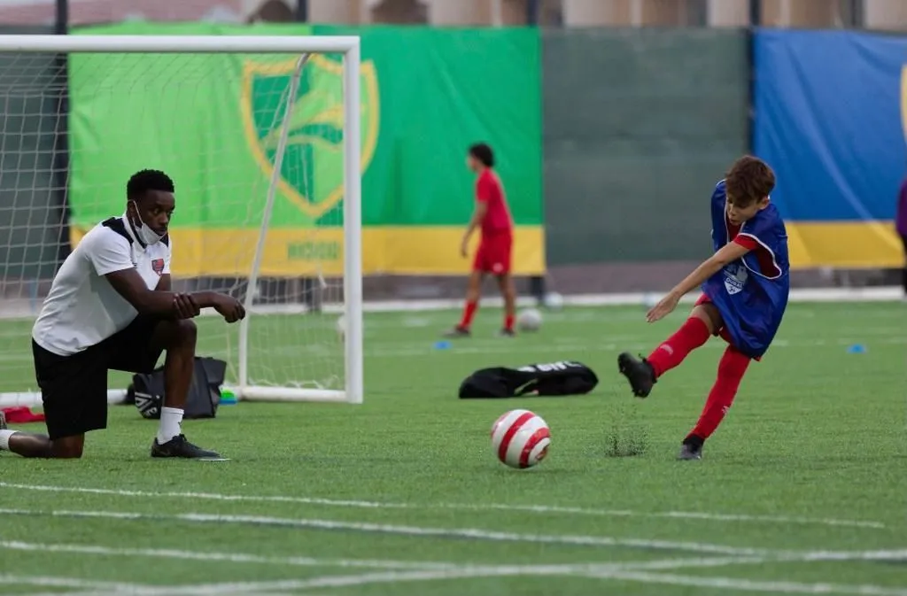
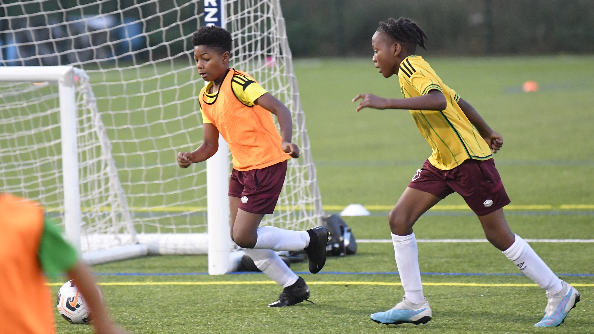
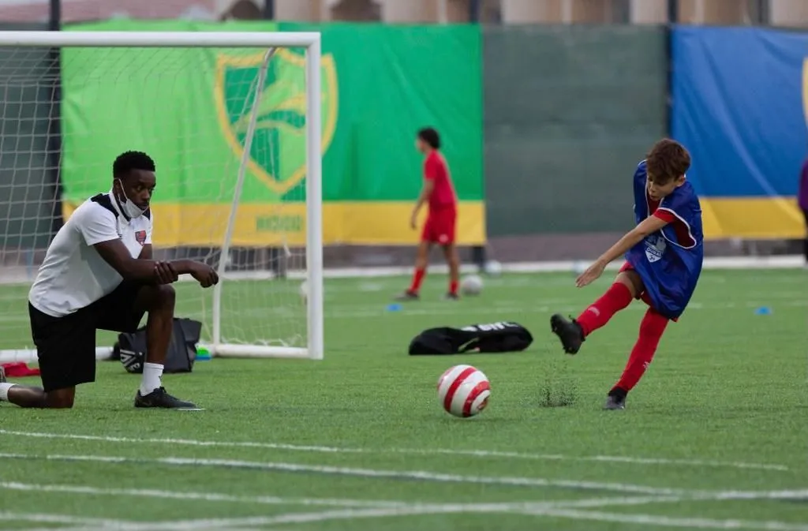
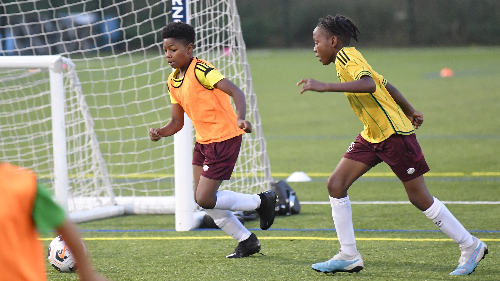

Play with Ginga Fivestars soccer academy is a professional football academy, providing coaching to boys and girls aged 5-17 of all abilities. Our philosophy derives from the Brazilian "Ginga" style of play. Ginga is about being expressive with the ball to bring joy to yourself and others. We strive to create a coaching environment where young players enjoy the process of learning new skills and putting them into practice. Based in Uganda, we have a very talented and experienced team of coaches who have played and coached at the highest level in both football and futsal. We have strong links with professional football clubs, providing our most talented players with a pathway into academy football.
About IFA MSM Since 2011, the MSM Football Academy International Football Academy has brought together young people from all over the world in the golden capital of the Czech Republic, in the most beautiful city in Europe – Prague. It doesn’t matter if you are an amateur player or a professional football player. Both individual players and entire football teams come to our training camps. The main task of the MSM International Football Academy is the high-quality training of football players playing at different levels. We are waiting for professional football players coming from Academies and clubs in their countries to improve their playing and personal qualities, exchange experiences and acquire language and game practice in friendlies and official tournaments. The Academy is also pleased to welcome amateur football players who want to experience the full atmosphere of professional European football. In order for players to feel comfortable in the teams, they are divided by age and training level. We develop skills and help football players who play in different positions to gain game practice.
MSM Football Academy cooperates with the leading football clubs in Prague and the Czech Republic: Sparta, Slavia, Bohemians, Victoria, Meteor, Victoria. The main priorities of our International Football Academy are quality education and a professional teaching approach: unique training methods, intensive game practice, only experienced coaches and assistants, equipment and equipment from world-famous manufacturers. All this is our standard. We develop excellent semester and annual programs. They include classes at the MSM Football Academy and intensive preparation for admission to universities in the Czech Republic and Europe. Our programs include: daily training, friendly games, official championship and cup games, participation in international tournaments, a rich cultural program, as well as language courses. The sports component of the program was developed together with the Czech Football Federation and AC Sparta Prague, and was approved by European coaches and methodologists.As part of our programs, you will not only play sports under the guidance of the best coaches in the Czech Republic, but you will also study your choice of Czech or English. Experienced teachers and native speakers act as mentors. An educational moment is necessary both for barrier-free communication within the team and for admission to universities in the Czech Republic and Europe. Did you know that studying in the Czech Republic in Czech is free even for foreigners? And that the results of the Central Test, the Unified State Exam, the UNT or the Independent External Exam are not important for admission to a university?Given the fact that the Czech Republic is a member state of the European Union, participants in our football programs have a great opportunity to make their way in Western European clubs.But that’s not all! In free time, cultural recreation is organized for program participants. Accompanied by the HSH team, they will get to know the Czech Republic, its culture and visit popular museums and historical monuments. And, of course, the entertainment program includes regular visits to the stadiums and matches of the Czech Championship and UEFA League! Also, for active recreation you have the opportunity to visit cities such as Dresden, Vienna, Berlin, Munich. International Football Academy MSM Football Academy – a tremendous experience and unforgettably fun times during the summer holidays and all year round!
OUR VISION: To help soccer athletes to realise their full potential both on and off the pitch by providing world-class professional soccer training complemented with world-leading educational opportunities
OUR VALUES: The philosophy of the Choices Pro-Experience | West Ham United Foundation Academy of Football is shaped by the values that will provide the platform for participants as players and in life. Values that go beyond the football field, are present in everyday life, and that will be essential in the progress of the player’s training
 


